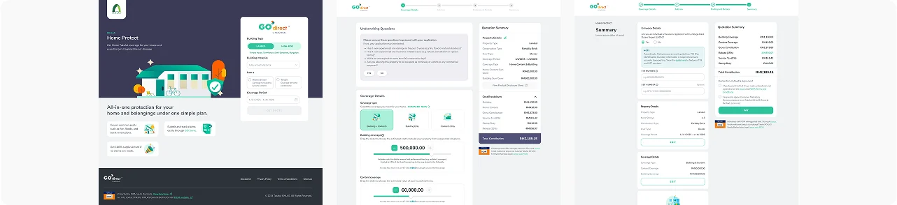
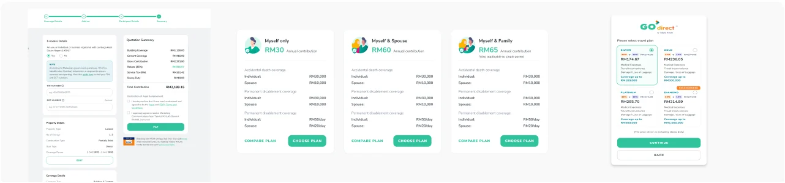
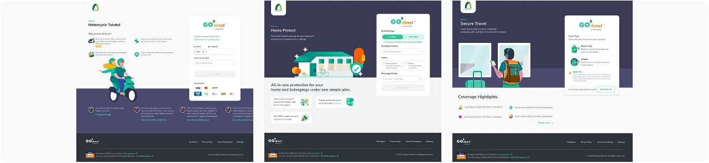

Designed the full purchase journey
I structured the entire flow from quotation to payment, making sure each step feels clear and predictable. I reduced unnecessary complexity so users can complete purchases without guidance from agents.

case study
Takaful IKHLAS GO Direct is a platform that allows users to buy and renew takaful products online without agents. It covers multiple products such as Motor, Travel, Personal Accident, and Fire/Home, each with different requirements and complexity. The challenge was to bring everything into one consistent and easy-to-understand experience while maintaining trust in a financial product. I worked on designing the end-to-end purchase journey, from quotation to payment and confirmation, focusing on clarity, simplicity, and usability.
role
I led the design of end-to-end user flows while shaping reusable components to keep the experience consistent and scalable across all products. I also used data insights to refine flows and reduce friction.
problem
I structured the entire flow from quotation to payment, making sure each step feels clear and predictable. I reduced unnecessary complexity so users can complete purchases without guidance from agents.

I designed real-time premium updates and clear breakdowns of coverage so users can easily compare options and understand what they are paying for before committing.

I aligned different product journeys into a shared UX structure so users don’t need to relearn how each product works. This helped create a consistent experience across all offerings.

The redesign made the purchase journey smoother and easier to complete, reducing friction in key steps such as quotation and review. Users were able to better understand pricing and coverage, leading to a more transparent experience. Overall, the platform became more consistent across products and easier to use as a self-service digital takaful journey.